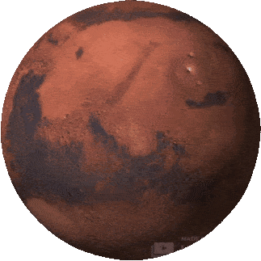
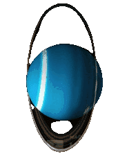
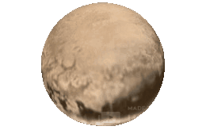

Our Solar System was created when the nebula, or space cloud, that was there originally collapsed billions of years ago, creating the Sun and then all of the Planets. Our Solar System is made up of our Sun and nine planets, including Pluto. Mercury is closest to the Sun, followed by Venus, Earth, Mars, Jupiter, Saturn, Uranus, Neptune, and then Pluto.
Click on the planets below to find out more 😀

To Bottom
The Sun:

Approximate Diameter: 865,000 miles
Approximate Distance from the center of the Galaxy: 26,000 light years, or 26,000 years travelling at the speed of light
Direction of rotation: Counter-clockwise
Fun Fact: The Sun is so large that you could fit a million Earths inside of it!
Click here for more information
Back to top
Mercury:

Approximate Diameter: 3,000 miles
Approximate Distance from the sun: 28,600 million miles
Direction of rotation: Counter-clockwise
Fun Fact: The side of Mercury that faces the sun is so hot that you would burn within one second of standing there. The other side is so cold that you would freeze solid!
Click here for more information
Back to top
Venus:

Approximate diameter: 7,500 miles
Approximate distance from the Sun: 67,400 million miles
Direction of rotation: Clockwise
Fun Fact: Venus is almost the same size as Earth, but is not habitable. Due to the thick clouds of poisonous gas which trap the heat of the Sun, Venus can get so hot that it can melt metal!
Click here for more information
Back to top
Earth:

Approximate Diameter: 8,000 miles
Approximate distance from the Sun: 67,400 million miles
Direction of rotation: Counter-clockwise
Fun Fact: Earth is the only planet in our Solar System to have life. It is known as the Blue Planet due to all of the water on it. Scientists do not yet know if there are any other planets with life on them.
Click here for more information
Back to top
Mars:

Approximate Diameter: 4,200 miles
Approximate distance from the Sun: 150 million miles
Direction of rotation: Counter-clockwise
Fun Fact: Many scientists believe that Mars has once supported life. However, that is currently the main subject of many debates.
Click here for more information
Back to top
Jupiter:

Approximate Diameter: 88,600 miles
Approximate distance from the Sun: 461,700 million miles
Direction of rotation: Counter-clockwise
Fun Fact: Jupiter is twice as large as all of the planets in the Solar System lumped together!
Click here for more information
Back to top
Saturn:

Approximate Diameter: 74,800 miles
Approximate distance from the sun: 906,800 million miles
Direction of rotation: Counter-clockwise
Fun Fact: Saturn's distinct rings are made up of thousands of small chunks of ice and rock.
Click here for more information
Back to top
Uranus:

Approximate Diameter: 31,000 miles
Approximate distance from the sun: 1.8 billion miles
Direction of rotation: Clockwise
Fun Fact: Uranus is the only planet in the solar system to be tiled on its side. Uranus is tilted at almost 100 degrees!
Click here for more information
Back to top
Neptune:

Approximate Diameter: 49,200 miles
Approximate distance from the sun: 2.8 billion miles
Direction of rotation: Counter-clockwise
Fun Fact: Neptune is the farthest planet from the Sun, due to the fact that Pluto is a dwarf planet. It also has a big spot on it, but it is not as big as Jupiter's Great Red Spot.
Click here for more information
Back to top
Pluto:

Approximate Diameter: 1,500 miles
Approximate distance from the sun: 3.7 billion miles
Direction of rotation: Counter-clockwise
Fun Fact: Pluto is so small that for some time it wasn't even considered a planet. Now, it is known as a dwarf planet.
Click here for more information
Back to top